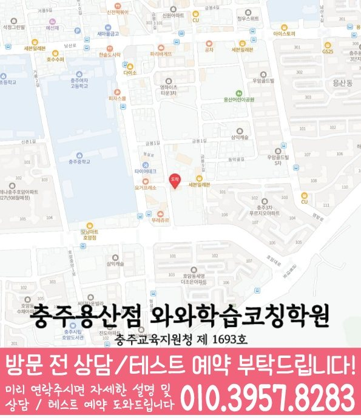

Middle school Korean · English · Math
호암동 중학생 국영수학원
호암동 중학생 국영수학원 선택 전 중등 내신 자료, 최근 오답과 과목별 가능 학년, 센터 위치·비용 확인 기준을 안내합니다.
01 Quick answer
호암동에서 먼저 확인할 내용
호암동에서 중학생 국영수학원을 찾는다면 와와학습코칭센터 충주용산점의 과목별 가능 학년을 먼저 확인하세요. 제공된 중학교 참고 자료와 학생의 실제 교재를 대조하고, 학생의 실제 풀이 기록에 맞게 국어·영어·수학의 막힌 원인을 나눈 뒤 실행 가능한 주간 계획을 정해야 합니다.
대표 학생 상황
같은 학습 고민이 있는 학생


010-6839-8283상담 전 핵심 안내
충청북도 충주시 호암동에서 중학생 영어·수학 학원을 찾는 학생을 위해, 지역 센터는 현재 실력 진단을 바탕으로 개념 정리, 유형 학습, 오답 관리까지 이어지는 학습 흐름을 제공합니다. 호암동 다음 학습 단계에서는 최근 풀이 기록을 바탕으로 다음 보완 순서를 정합니다. 충청북도 충주시 호암동에서 중학생 국영수학원을 알아보는 상황이라면 중1·중2·중3 학년별 시험 범위와 학습 습관을 함께 확인하는 방식이 필요합니다. 호암동 중학생 상담에서는 풀이를 멈춘 단계를 최근 결과와 비교해 다음 과제에 반영합니다.
처음 상담에서 구분할 학습 과제
호암동 학습 순서를 정할 때는 단원별 이해도를 바탕으로 다음 학습 계획을 조정합니다. 성적만 보지 않고 개념 이해도와 풀이 습관, 오답 원인을 확인해 학생에게 맞는 학습 순서를 설계합니다.
영어·수학 균형 학습. 영어는 문법·독해·어휘를 연결해 완성하고, 수학은 단원 핵심 개념과 대표 유형을 단계별로 반복합니다.
호암동 국어 수업에서는 많은 지문보다 핵심 내용과 선택지 근거, 서술 과정을 살펴야 이와 비슷한 상황의 학생의 감점 원인을 찾기 쉽습니다. 충청북도 충주시 호암동 영어는 단어 수와 함께 문장 구조를 나누고 교과서 표현을 적용하는 과정을 확인해야 합니다. 호암동 중학생의 국어·영어·수학 학습 점검에서 수학 학습을 확인할 때는 선행 단원 이름보다 계산 실수, 조건 정리, 풀이 과정 누락처럼 자녀가 반복하는 오류를 먼저 확인하는 편이 실속 있습니다. 시험·교과 범위와 연결해 과목별 피드백이 남으면 국어·영어·수학을 한곳에서 보더라도 세 과목이 똑같은 방식으로 흘러가는 문제를 줄일 수 있습니다.
설명을 듣고 풀이로 확인하는 과정
설명보다 이해를 우선. 학생이 어디에서 막히는지 질문과 풀이 과정을 통해 확인하고, 필요한 개념을 다시 연결해 이해가 남도록 지도합니다.
호암동 학습 점검에서는 오답 원인을 바탕으로 학습 상태를 구체적으로 확인합니다.
시험·교과 범위를 상담 주제로 함께 확인하면 호암동 학생의 수업 참여, 과제 흐름, 복습 주기를 생활 리듬에 맞춰 판단하기가 수월합니다. 호암동 상담은 점수 약속보다 학생의 현재 기록과 다음 점검 계획을 구체적으로 확인하는 데 초점을 둡니다. 호암동 학부모는 오답 기록과 피드백 방식이 과목별로 나뉘는지 확인할 수 있습니다. 호암동의 보완할 부분이 있는 학생에게는 같은 시간표 안에서도 국어 독해, 영어 문장 해석, 수학 풀이 과정이 서로 다른 속도로 조정되어야 합니다.
호암동 학교 일정과 현재 교재를 함께 확인하기
과목별 기록을 살펴보면, 제공 자료에는 예성여중·미덕중이 중학교 참고 정보로 정리되어 있습니다. 학생의 현재 자료를 기준으로 보면, 학교 이름은 상담의 출발점으로만 사용하고 실제 시험·교과 자료를 함께 확인합니다.
학교 자료를 대조할 때, 호암동 학생이 사용하는 시험 범위표·학교 프린트·수행평가 일정 자료를 가져오면 국어·영어·수학의 현재 단원과 준비 일정을 구체적으로 확인할 수 있습니다. 학교 일정까지 함께 보면, 자료가 수업 진도와 재확인 날짜에 반영되는지도 물어보세요.
수업 전후 기록을 이어 가는 방법
1. 현재 수준 확인. 학년, 학교 진도, 최근 시험 결과를 바탕으로 약한 단원과 자주 틀리는 유형을 먼저 정리합니다.
2. 개념 정리와 유형 학습. 바로 문제풀이로만 진행하지 않고 핵심 개념을 정리한 뒤, 기초 유형부터 내신·서술형까지 단계적으로 연습합니다.
3. 오답 관리와 학습 피드백. 틀린 문제를 재풀이에서 그치지 않고, 원인(개념 부족·계산 실수·독해 오류 등)을 분류해 다음 풀이 방법을 정리합니다.
충청북도 충주시 호암동 중2 학생의 시험 범위를 볼 때는 과목별 누적 단원과 반복 오답을 함께 표시하는 편이 좋습니다. 호암동 중3 학생은 고등 과정 선행 여부보다 중학교 국영수 내신에서 틀린 단원을 정리하고, 시험·교과 범위와 연결된 학습 기록을 남기는 일이 먼저입니다. 호암동 중등 과정은 학년만 묻기보다 학교 일정, 과목별 공백과 필요한 복습량을 함께 확인해야 합니다. 호암동 중1 학생은 자유학기 또는 학교 적응 과정에서 공부 습관이 느슨해지기 쉬우므로 호암동 중학생 세 과목 학습 상담에서 과목별 기본 루틴을 먼저 점검하면 좋습니다.
학년 변화에 따라 달라지는 점검 항목
중1. 기초 문법과 독해 흐름을 잡고, 수학 개념(식·방정식 등)부터 흔들림 없이 다집니다. 호암동 수업 내용을 점검할 때는 최근 풀이 기록을 바탕으로 다음 학습 계획을 조정합니다.
중2. 단원별 대표 유형을 반복 점검해 점수 변동이 생기지 않도록 관리합니다. 영어는 문법-독해-문장 해석을 연결하고, 수학은 오답 유형을 기준으로 보완합니다.
중3. 내신 대비를 중심으로 심화 유형과 실전 문제풀이 전략을 함께 익힙니다. 시간 관리, 실수 방지, 오답 패턴 교정을 집중적으로 진행합니다.
시험 대비. 시험 범위와 제공된 시험지의 문항 유형에 맞춰 복습 계획을 재구성하고, 집중 학습 순서를 제시합니다. 시험 전에는 실수 유형과 자주 틀리는 문제를 우선 점검해 반복 오류가 줄어드는지 확인합니다.
호암동 중학생을 위한 지역 센터는 학생의 현재 상태를 바탕으로 영어·수학 학습을 단계별로 정리하고, 상담을 통해 내신과 실력 향상을 위한 방향을 자세히 정리합니다.
시험·교과 범위를 함께 확인하는 호암동 중학생 학습 점검에서는 학습 결과뿐 아니라 출결, 과제, 보충, 질문 흐름을 함께 남기는지 살피는 것이 좋습니다. 같은 학습 고민이 있는 학생을 위한 진단은 점수 한 줄보다 “왜 틀렸는가, 다시 풀면 어디서 멈추는가, 다음 과제에 어떻게 반영되는가”를 기록하는 방식이어야 합니다. 호암동에서 세 과목 오답표를 볼 때는 국어·영어·수학의 실수 유형이 따로 기록되는지 살펴봅니다. 충청북도 충주시 호암동 문제를 더 풀기 전에 이전 오답을 다시 해석하고 풀이 근거를 말하는 과정을 살펴보세요.
02 Consultation examples
호암동 학부모 상담 상황 예시
아래 내용은 실제 고객 후기나 성적 결과가 아니라, 상담에서 확인할 질문을 이해하기 위한 상황 예시입니다.
호암동에서 세 과목을 함께 알아보는 학부모의 상담 장면을 가정했습니다. 최근 풀이를 보며 국어 근거 찾기, 영어 해석, 수학 풀이 단계 중 우선 점검할 부분을 구분해 듣는 상황입니다.
호암동에서 제공된 중학교 참고 정보인 예성여중·미덕중의 목록과 학생의 실제 학교 자료를 대조해 질문하는 학부모 상황을 가정했습니다. 상담 내용을 들은 뒤 국어·영어·수학의 피드백 방식이 각각 무엇인지와 가정에서 확인할 기록을 구분합니다.
03 FAQ
호암동 중학생 국영수학원 자주 묻는 질문
학부모님이 상담 전에 자주 확인하는 내용을 질문과 답변으로 정리했습니다.
호암동 중학생 국영수학원 상담에서 첫 번째로 확인하는 내용은 무엇인가요?
과제를 끝낸 뒤 오답 복습이 이어지지 않는다면 최근 시험지와 교재에서 막힌 지점을 과목별로 나누어 보세요. 호암동 상담에서는 학교 일정과 주간 실행 시간도 함께 확인합니다.
국어·영어·수학 과제량은 호암동 중학생에게 어떻게 배분하나요?
호암동 상담에서는 세 과목을 같은 분량으로 나누기보다 최근 시험과 학교 일정, 반복 오답을 기준으로 우선순위를 정합니다. 과목별 완료 기준이 있어야 계획과 실제 실행의 차이를 확인할 수 있습니다.
호암동 중학교 참고 정보는 상담에서 어떻게 활용하나요?
제공된 중학교 참고 목록에는 예성여중·미덕중 등이 포함됩니다. 이는 수업 가능 여부를 보장하는 목록이 아니며, 실제 시험 범위표·학교 프린트·수행평가 일정 자료와 센터별 개설 과목을 상담에서 함께 확인해야 합니다.
호암동 상담 시 개설 과목과 보강 방식은 어디에 문의하나요?
센터별 교습비 확인 버튼에서 제공 자료를 볼 수 있습니다. 실제 방문 위치는 위 센터 확인 정보에서 확인할 수 있습니다. 호암동 학생에게 맞는 시간표가 있는지와 중학생 수업 범위는 희망 센터의 현재 안내를 기준으로 판단합니다.
04 Continue
호암동 페이지 이동
카테고리 전체 지역 또는 앞뒤 지역 안내로 이동할 수 있습니다.